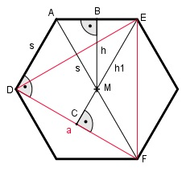

Aufgabe 213 Aus 12 regelmäßigen Sechseckblechen sollen 12 Dreiecke mit größtmöglicher Seitenlänge entstehen. Wie groß ist der Schnittverlust V, wenn eine Sechseckseite 14,5 cm lang ist?

Satz von Pythagoras im Dreieck AMB: s s s2 = (---)2 + h2 | -(---)2 2 2 s2 s2 - ---- = h2 4 3 h2 = --- * s2 |√ 4 s 14,5 cm h = --- * √3 = ---------- * √3 = 12,6 cm 2 2 Fläche des Sechsecks A6: 12,6 cm * 14,5 cm A6 = 6 * --------------------- = 548,1 cm2 2 Satz von Pythagoras im Dreieck ADF: (2 * s)2 = s2 + a2 |-s2 a2 = 4s2 - s2 = 3s2 |√ a = s * √3 = 14,5 cm * √3 = 25,1 cm Satz von Pythagoras im Dreieck DCE: a a a2 = h12 + (---)2 | -(---)2 2 2 a2 3 3 h12 = a2 - ---- = --- a2 = --- 25,12 = 472,5 |√ 4 4 4 h1 = 21,7 cm Fläche des Dreiecks: a * h1 25,1 cm * 21,7 cm ADreieck = --------- = ------------------- = 2 2 = 272,3 cm2 Abfall V: V = 12 * (ASechseck – ADreieck) V = 12 * (548,1 cm2 - 272,3 cm2) = 3 309,6 cm2